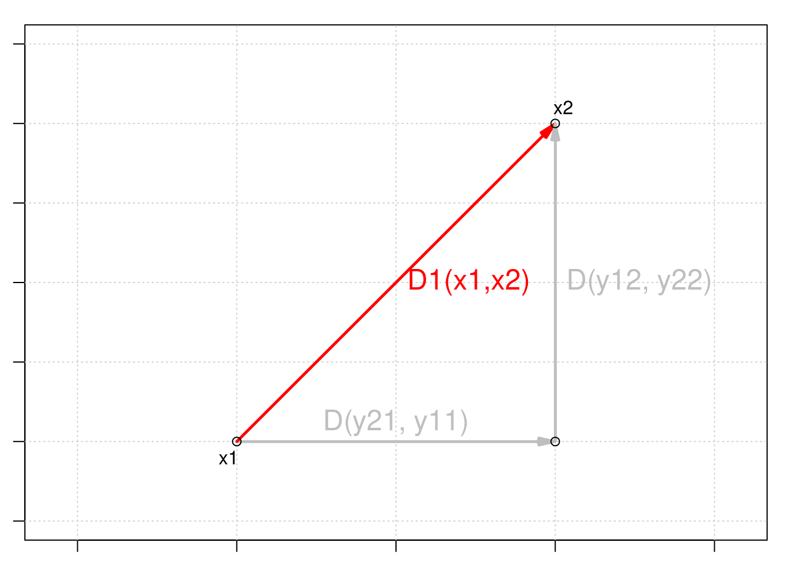
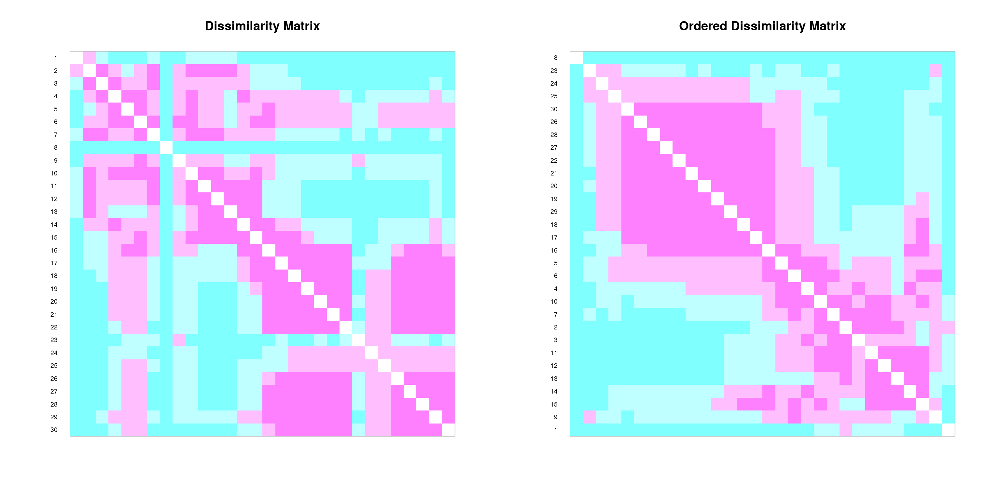
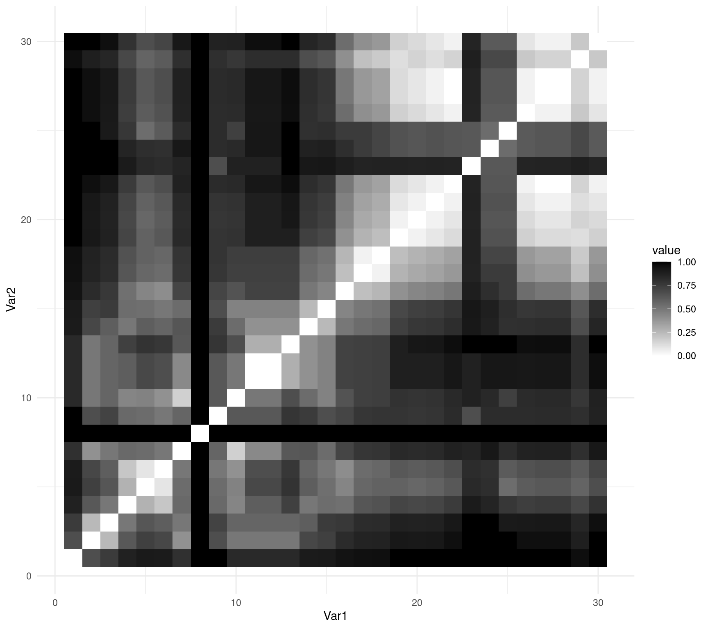

Chapitre 9 Types de coefficients de distance
Il existe trois groupes de coefficients de distance : métriques, sémimétriques et nonmétriques.
9.1 Distances métriques
Le premier groupe est constitué des métriques, et ses coefficients satisfont aux propriétés suivantes :
minimum 0 : si l’espèce \(a\) est égale à l’espèce \(b\), alors \(D(a,b)=0\) ; ✅
positivité : si \(a \neq b\), alors \(D(a,b) > 0\) ; ✅
symétrie : \(D(a,b) = D(b,a)\) ; ✅
inégalité triangulaire : \(D(a,b) + D(b,c) \geq D(a,c)\). La somme de deux côtés d’un triangle tracé dans l’espace euclidien est égale ou supérieure au troisième côté. ✅
Nous pouvons repérer toutes ces propriétés ci-dessous :
as.matrix(dist(spe))[1:6, 1:6]## 1 2 3 4 5 6
## 1 0.000000 5.385165 7.416198 7.874008 10.816654 7.348469
## 2 5.385165 0.000000 2.449490 4.123106 10.677078 4.582576
## 3 7.416198 2.449490 0.000000 3.000000 10.862780 4.123106
## 4 7.874008 4.123106 3.000000 0.000000 9.219544 2.828427
## 5 10.816654 10.677078 10.862780 9.219544 0.000000 8.185353
## 6 7.348469 4.582576 4.123106 2.828427 8.185353 0.0000009.1.1 Distances euclidiennes
La mesure de distance métrique la plus courante est la distance euclidienne.
La distance euclidienne est une mesure de la distance entre deux points dans l’espace euclidien. En deux dimensions, la distance euclidienne entre deux points (x1, y1) et (x2, y2) peut être calculée à l’aide du théorème de Pythagore :
\[D_{1} (x_1,x_2) = \sqrt{\sum_{j=1}^p(y_{1j} - y_{2j})^2}\]

La distance euclidienne est une mesure couramment utilisée dans les analyses multivariées, car elle offre un moyen simple et intuitif de mesurer la distance ou la similarité entre les observations dans un espace multidimensionnel.
En utilisant stats::dist(), nous pouvons la calculer avec :
spe.D.Euclid <- dist(x = spe, method = "euclidean")Et nous pouvons tester si une distance est euclidienne en utilisant :
is.euclid(spe.D.Euclid)## [1] TRUE9.1.2 Défi #1
Votre tour! En utilisant la fonction dist(), calculez la matrice de distance euclidienne \(D_{hmm}\) pour les abondances d’espèces par matrice de site \(Y_{hmm}\) ci-dessous :
| Sites | \(y_1\) | \(y_2\) | \(y_3\) |
|---|---|---|---|
| \(s_1\) | 0 | 4 | 8 |
| \(s_2\) | 0 | 1 | 1 |
| \(s_3\) | 1 | 0 | 0 |
Y.hmm <- data.frame(y1 = c(0, 0, 1), y2 = c(4, 1, 0), y3 = c(8,
1, 0))Après cela, examinez les chiffres, réfléchissez-y de manière critique !
Solution:
Vous devriez obtenir quelque chose de similaire à ceci :
Y.hmm.DistEu <- dist(x = Y.hmm, method = "euclidean")
as.matrix(Y.hmm.DistEu)## 1 2 3
## 1 0.000000 7.615773 9.000000
## 2 7.615773 0.000000 1.732051
## 3 9.000000 1.732051 0.000000Maintenant, regardez la composition et les distances entre les sites \(s_2\) et \(s_3\) et entre \(s_1\) et \(s_2\). Que se passe-t-il ?
La distance euclidienne entre les sites \(s_2\) et \(s_3\), qui n’ont aucune espèce en commun, est plus petite que la distance entre \(s_1\) et \(s_2\), qui partagent les espèces \(y_2\) et \(y_3\) ( !).
D’un point de vue écologique, il s’agit d’une évaluation problématique de la relation entre les sites.
Ce problème est connu sous le nom de problème du double zéro, *c’est-à-dire que les doubles zéros sont traités de la même manière que les doubles présences, de sorte que les doubles zéros réduisent la distance entre deux sites.
Les distances euclidiennes ( \(D_1\) ) ne doivent donc pas être utilisées pour comparer des sites sur la base de l’abondance des espèces.
9.1.3 Distances d’accord
Orlóci (1967) a proposé la distance de corde pour analyser la composition des communautés.
La distance de corde, également connue sous le nom de distance angulaire ou distance de grand cercle, est une mesure de la distance entre deux points sur une sphère, telle que la Terre.
Elle se compose de :
1. Normaliser les données, c’est-à-dire mettre à l’échelle les vecteurs de site à la longueur 1 en divisant les abondances des espèces dans un échantillon donné par la somme à racine carrée des abondances carrées dans tous les échantillons, comme suit
\[y'_{Uj}=y_{Uj}/\sum^s_{j=1}{y^2_{Uj}}\]
2. Calculer les distances euclidiennes sur ces données normalisées :
\[D_{3} (x_1,x_2) = \sqrt{\sum_{j=1}^p(y'_{1j} - y'_{2j})^2}\]
Nous pouvons utiliser vegan::vegdist() pour cela :
spe.D.Ch <- vegdist(spe, method = "chord")## Warning in vegdist(spe, method = "chord"): you have empty rows: their dissimilarities may be
## meaningless in method "chord"## Warning in vegdist(spe, method = "chord"): missing values in resultsas.matrix(spe.D.Ch)[1:3, 1:3]## 1 2 3
## 1 0.0000000 0.7653669 0.9235374
## 2 0.7653669 0.0000000 0.2309609
## 3 0.9235374 0.2309609 0.0000000Lorsque deux sites partagent les mêmes espèces dans les mêmes proportions du nombre d’individus, la valeur de \(D_3\) est de 0$, et lorsqu’aucune espèce n’est partagée, sa valeur est de \(\sqrt{2}\).
Que se passe-t-il si nous calculons les distances d’accord dans la même matrice site par espèce \(Y_{hmm}\) ?
Essayons de calculer les distances d’accord dans la même matrice que celle utilisée pour le défi n° 1 :
Y.hmm.DistCh <- vegdist(Y.hmm, method = "chord")as.matrix(Y.hmm.DistCh)## 1 2 3
## 1 0.0000000 0.3203645 1.414214
## 2 0.3203645 0.0000000 1.414214
## 3 1.4142136 1.4142136 0.000000Comparons maintenant avec ce que nous avons obtenu en utilisant les distances euclidiennes :
as.matrix(Y.hmm.DistEu)## 1 2 3
## 1 0.000000 7.615773 9.000000
## 2 7.615773 0.000000 1.732051
## 3 9.000000 1.732051 0.000000Voyez à nouveau à quoi ressemble notre matrice :
Y.hmm## y1 y2 y3
## 1 0 4 8
## 2 0 1 1
## 3 1 0 0Ainsi, l’ajout d’un nombre quelconque de doubles zéros à une paire de sites ne change pas la valeur de \(D_3\). Par conséquent, les distances de corde peuvent être utilisées pour comparer des sites décrits par des abondances d’espèces !
9.1.4 Coefficient de Jaccard
Un autre coefficient d’association populaire est le coefficient de similarité de Jaccard (1900).
Le coefficient de similarité de Jaccard a été proposé à l’origine par le mathématicien français Paul Jaccard en 1901, dans le contexte de l’écologie. Jaccard s’intéressait à la comparaison de la composition en espèces de différentes communautés végétales et a proposé l’indice de Jaccard comme mesure de la similarité entre deux communautés sur la base de leur richesse en espèces.
Le coefficient de similarité de Jaccard n’est approprié que pour les données binaires, et son coefficient de distance est défini par la taille de l’intersection divisée par la taille de l’union des ensembles d’échantillons.
\[D_{7}(x_1,x_2) = 1 - \frac{\vert x_1 \cap x_2 \vert}{\vert x_1 \cup x_2 \vert} = 1 - \frac{\vert x_1 \cap x_2 \vert}{\vert x_1 \vert + \vert x_2 \vert - \vert x_1 \cap x_2 \vert} = 1-\frac{a}{a+b+c}\]
où,
- \(a\) est le nombre d’espèces partagées entre \(x_1\) et \(x_2\) qui sont codées \(1\) ;
- \(b\) est le nombre d’occurrences où l’on sait que \(x_1\) et \(x_2\) sont différents ;
- c$ est le nombre d’absences communes entre \(x_1\) et \(x_2\), *c.-à-d. toutes deux 0$.
Par exemple, pour les sites \(x_1\) et \(x_2\) :
| \(x_1,x_2\) | \(y_1\) | \(y_2\) | \(y_3\) | \(y_4\) | \(y_5\) |
|---|---|---|---|---|---|
| \(x_1\) | 0 | 1 | 0 | 1 | 0 |
| \(x_2\) | 0 | 1 | 1 | 1 | 1 |
On peut donc calculer \(a\), \(b\) et \(c\) : - \(a\) = 1 + 1 = 2
\(b\) = 1 + 1 = 2
\(c\) = 1
Et donc notre coefficient de distance :
\[D_{7}(x_1,x_2) = 1-\frac{2}{2+2+1}= 0.6\]
Dans R, vous pouvez utiliser la fonction vegan::vegdist() pour calculer le coefficient de Jaccard :
spe.D.Jac <- vegdist(spe, method = "jaccard", binary = TRUE)## Warning in vegdist(spe, method = "jaccard", binary = TRUE): you have empty rows: their dissimilarities may be
## meaningless in method "jaccard"9.2 Distances semimétriques
Le deuxième groupe est constitué des distances sémimétriques, et elles violent la propriété de l’inégalité des triangles :
minimum 0 : si l’espèce \(a\) est égale à l’espèce \(b\), alors \(D(a,b)=0\) ; ✅
positivité : si \(a \neq b\), alors \(D(a,b) > 0\) ; ✅
symétrie : \(D(a,b) = D(b,a)\) ; ✅
inégalité des triangles: \({D(a,b) + D(b,c) \geq ou < D(a,c)}\). La somme de deux côtés d’un triangle tracé dans l’espace euclidien n’est pas égale ou supérieure au troisième côté. ❌
9.2.1 Coefficient de Sørensen
Tous les paramètres du coefficient de similarité de Jaccard ont le même poids.
\[D_{7}(x_1,x_2)=1-\frac{a}{a+b+c}\]
Cependant, vous pouvez considérer que la présence d’une espèce est plus informative que son absence.
La distance correspondant au coefficient de similarité de Sørensen (1948) donne du poids aux doubles présences :
\[D_{13}(x_1,x_2)=1-\frac{2a}{2a+b+c}=\frac{b+c}{2a+b+c}\]
où,
- \(a\) est le nombre d’espèces partagées entre \(x_1\) et \(x_2\) qui sont codées \(1\) ;
- \(b\) est le nombre d’occurrences où l’on sait que \(x_1\) et \(x_2\) sont différents ;
- \(c\) est le nombre d’absences communes entre \(x_1\) et \(x_2\), *c’est-à-dire les deux 0$.
Dans R, vous pouvez également utiliser la fonction vegan::vegdist() pour calculer le coefficient de Sørensen :
spe.D.Sor <- vegdist(spe, method = "bray", binary = TRUE)## Warning in vegdist(spe, method = "bray", binary = TRUE): you have empty rows: their dissimilarities may be
## meaningless in method "bray"Comme les coefficients de Jaccard et de Sørensen ne sont appropriés que pour les données de présence-absence, vous devez effectuer une transformation binaire des données d’abondance en utilisant
binary = TRUEdansvegdist().
9.2.2 Coefficient de Bray-Curtis
Le coefficient de dissimilarité de Bray-Curtis est une version modifiée de l’indice de Sørensen et tient compte de l’abondance des espèces :
\[D_{14}(x_1,x_2)=\frac{\sum{\vert y_{1j}-y_{2j}\vert}}{\sum{( y_{1j}+y_{2j})}}=\]
\[D_{14}(x_1,x_2)=1 - \frac{2W}{A+B}\]
où,
- \(W\) est la somme des abondances les plus faibles de chaque espèce trouvée entre les sites \(x_1\) et \(x_2\) ;
- \(A\) est la somme de toutes les abondances dans \(x_1\) ; et,
- \(B\) est la somme de toutes les abondances dans \(x_2\).
Par exemple, pour les sites \(x_1\) et \(x_2\) :
| \(x_1,x_2\) | \(y_1\) | \(y_2\) | \(y_3\) | \(y_4\) | \(y_5\) |
|---|---|---|---|---|---|
| \(x_1\) | 2 | 1 | 0 | 5 | 2 |
| \(x_2\) | 5 | 1 | 3 | 1 | 1 |
Alors:
- \(W = 2 + 1 + 0 + 1 + 1 = 5\)
- \(A = 2 + 1 + 0 + 5 + 0 = 8\)
- \(B = 5 + 1 + 3 + 1 + 2 = 12\)
\[D_{14}(x_1,x_2) = 1-\frac{2 \times 5}{8+12} = 0.5\]
Pour calculer le coefficient de dissimilarité de Bray-Curtis, qui peut prendre en compte les abondances, vous devez définir binary = FALSE.
spe.db.pa <- vegdist(spe, method = "bray", binary = FALSE)## Warning in vegdist(spe, method = "bray", binary = FALSE): you have empty rows: their dissimilarities may be
## meaningless in method "bray"spe.db <- as.matrix(spe.db.pa)9.3 Distances non métriques
Les distances non métriques ne satisfont pas les propriétés métriques de symétrie, d’inégalité des triangles et d’identité des indiscernables :
minimum 0 : si l’espèce \(a\) est égale à l’espèce \(b\), alors \(D(a,b)=0\) ; ✅
positivité :si \(a \neq b\), alors \(D(a,b) > ou < 0\) ; ❌symétrie : \(D(a,b) = D(b,a)\) ; ✅
inégalité des triangles: \({D(a,b) + D(b,c) \geq ou < D(a,c)}\). La somme de deux côtés d’un triangle tracé dans l’espace euclidien n’est pas égale ou supérieure au troisième côté. ❌
9.3.1 Distance de Mahalanobis
La distance de Mahalanobis entre un point \(x\) et un groupe de points de moyenne \(\mu\) et de covariance \(\Sigma\) est définie comme suit :
\[ D_{M}(x, \mu)=\sqrt{(x-\mu)^{T} \Sigma^{-1}(x-\mu)} \] où \(T\) représente la transposition et \(\Sigma^{-1}\) est l’inverse (ou l’inverse généralisé) de la matrice de covariance \(\Sigma\).
La distance de Mahalanobis est une mesure de la distance entre un point et un groupe de points, qui tient compte de la structure de covariance des données.
L’inverse de la matrice de covariance peut ne pas exister dans certains cas, par exemple lorsque les variables sont linéairement dépendantes ou lorsqu’il y a plus de variables que d’observations. Dans ces cas, nous pouvons utiliser l’inverse généralisé de la matrice de covariance au lieu de l’inverse pour calculer la distance de Mahalanobis.
Cette inverse généralisée peut être calculée à l’aide de différentes méthodes, telles que la pseudo-inverse de Moore-Penrose ou la décomposition en valeurs singulières.
# Créer une matrice
x <- matrix(rnorm(100 * 3), ncol = 3)
# Calculer la matrice de covariance et son inverse
# généralisé
cov_mat <- cov(x)
cov_inv <- MASS::ginv(cov_mat)
# Calculer la distance de Mahalanobis en utilisant
# l'inverse généralisé
mah_dist <- mahalanobis(x, colMeans(x), cov_inv)
# Imprimer la distance de Mahalanobis
mah_dist## [1] 1.6333615 8.2638225 7.6371632 7.9645112 7.3950840 3.9511923
## [7] 0.6719701 1.2790553 19.9758447 5.5343360 1.9066793 2.5467632
## [13] 18.2462825 4.7159818 3.5950914 3.1871962 3.4759397 1.7764996
## [19] 0.5974142 8.9296462 9.1470735 2.4361820 2.2473491 2.1349808
## [25] 5.5318997 6.4615493 6.5122849 8.7572546 5.2732208 1.6412274
## [31] 2.3540583 0.5971998 14.0443086 1.5285220 1.5538400 0.1157598
## [37] 2.8859654 4.2233685 5.0997459 0.6459499 1.4097440 3.4793937
## [43] 4.8303942 3.6531025 11.9254386 5.2427706 0.7587315 3.3155899
## [49] 5.1716175 0.2043444 9.4651610 1.4931354 0.3381389 4.5972039
## [55] 2.1311536 6.4009584 2.3636371 2.4586476 2.9058956 2.6674844
## [61] 0.1546744 0.9982329 0.8486829 4.1664324 6.6193625 5.3729651
## [67] 4.7992751 1.6936433 2.5706305 1.8994898 1.9360071 0.3502614
## [73] 9.3106625 4.0849285 2.6191792 3.7539920 1.1056507 4.7667610
## [79] 2.0091646 8.2142233 6.5627198 2.1773824 5.6802405 0.2499022
## [85] 2.5452155 6.5234507 3.1444226 1.0842473 4.2727105 1.1747174
## [91] 1.9055379 3.5626860 1.8641607 3.3611391 1.7698502 3.6802622
## [97] 1.2437255 0.9574402 1.5393089 0.21541339.4 Représentation des matrices de distance
Nous pouvons créer des représentations graphiques des matrices d’association à l’aide de la fonction coldiss() :
# coldiss() function Color plots of a dissimilarity matrix,
# without and with ordering License: GPL-2 Author: Francois
# Gillet, 23 August 2012
"coldiss" <- function(D, nc = 4, byrank = TRUE, diag = FALSE) {
require(gclus)
if (max(D) > 1)
D <- D/max(D)
if (byrank) {
spe.color <- dmat.color(1 - D, cm.colors(nc))
} else {
spe.color <- dmat.color(1 - D, byrank = FALSE, cm.colors(nc))
}
spe.o <- order.single(1 - D)
speo.color <- spe.color[spe.o, spe.o]
op <- par(mfrow = c(1, 2), pty = "s")
if (diag) {
plotcolors(spe.color, rlabels = attributes(D)$Labels,
main = "Dissimilarity Matrix", dlabels = attributes(D)$Labels)
plotcolors(speo.color, rlabels = attributes(D)$Labels[spe.o],
main = "Ordered Dissimilarity Matrix", dlabels = attributes(D)$Labels[spe.o])
} else {
plotcolors(spe.color, rlabels = attributes(D)$Labels,
main = "Dissimilarity Matrix")
plotcolors(speo.color, rlabels = attributes(D)$Labels[spe.o],
main = "Ordered Dissimilarity Matrix")
}
par(op)
}
# Utilisation : coldiss(D = dissimilarity.matrix, nc = 4,
# byrank = TRUE, diag = FALSE)
# Si D n'est pas une matrice de dissimilarité (max(D) > 1),
# alors D est divisée par max(D) nc nombre de couleurs
# (classes) byrank = TRUE classes de taille égale byrank =
# FALSE intervalles de longueur égale diag = TRUE imprime
# les étiquettes des objets également sur la diagonale
# Exemple : coldiss(spe.dj, nc=9, byrank=F, diag=T)coldiss(spe.D.Jac)
Vous pouvez également utiliser ggplot2::ggplot() pour représenter votre matrice en utilisant geom_tile() :
# obtenir l'ordre des lignes et des colonnes
order_spe.D.Jac <- hclust(spe.D.Jac, method = "complete")$order
# réorganiser la matrice pour produire une figure ordonnée
# par similarités
order_spe.D.Jac_matrix <- as.matrix(spe.D.Jac)[order_spe.D.Jac,
order_spe.D.Jac]
# converts to data frame
molten_spe.D.Jac <- reshape2::melt(as.matrix(order_spe.D.Jac_matrix))
# créer un objet ggplot
ggplot(data = molten_spe.D.Jac, aes(x = Var1, y = Var2, fill = value)) +
geom_tile() + scale_fill_gradient(low = "white", high = "black") +
theme_minimal()